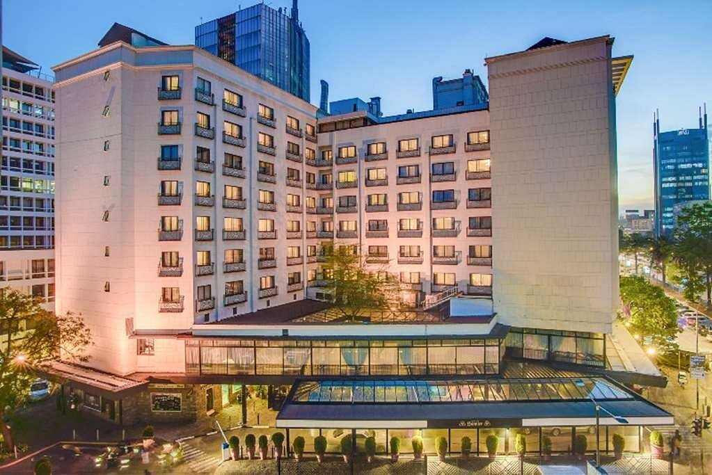

HOTELS
ThereAre Beautiful Luxirious Hotels In Nairobi
CROWNE PLAZA HOTEL

Welcome to Crowne Plaza Nairobi Airport, conveniently located a five-minute drive from Jomo Kenyatta International Airport and The Nairobi Expressway toll station saving you valuable time and ensuring a stress-free journey with complimentary airport transfers on the hour. Our 144 soundproof rooms, exquisite dining options, fully equipped meeting rooms, spa, rooftop pool and 24-hour gym, ensure an extraordinary journey where every moment is crafted to make your stay truly memorable. We are your ideal hotel for stays in between long flights, on transit, or for a brief business meeting. Book your stay with us today for an exceptional hotel experience in Nairobi, Kenya.
SAROVA STANLY HOTEL
At Sarova Stanley, we strive to provide our guests with an experience that goes beyond all expectations. It all begins with our friendly staff who do all they can to ensure your stay is relaxing & enjoyable. We are an award-winning hotel conveniently located in Nairobi’s Central Business District with quick access via the Nairobi Expressway to and from areas such as the Jomo Kenyatta International Airport - JKIA (17.3 km), Wilson Airport (5.8 km), Kenyatta International Convention Centre - KICC (1.5 km), UNEP (8.9 km) & several Government offices. Other popular attractions within easy proximity are the famous Nairobi National Park, the captivating Nairobi National Museum, the newly refurbished Uhuru Park and a host of high-end shopping malls.